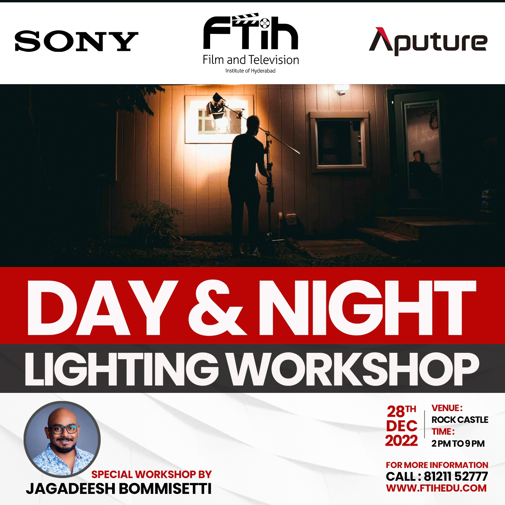
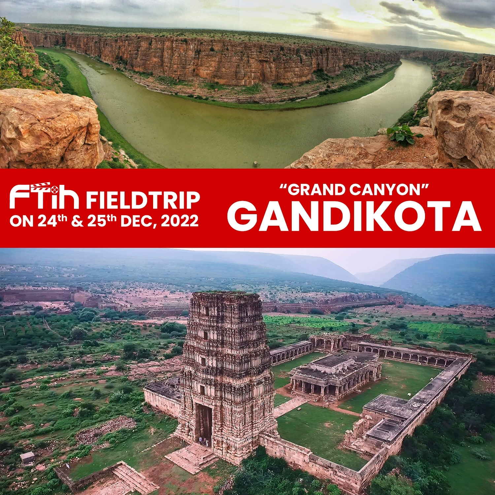
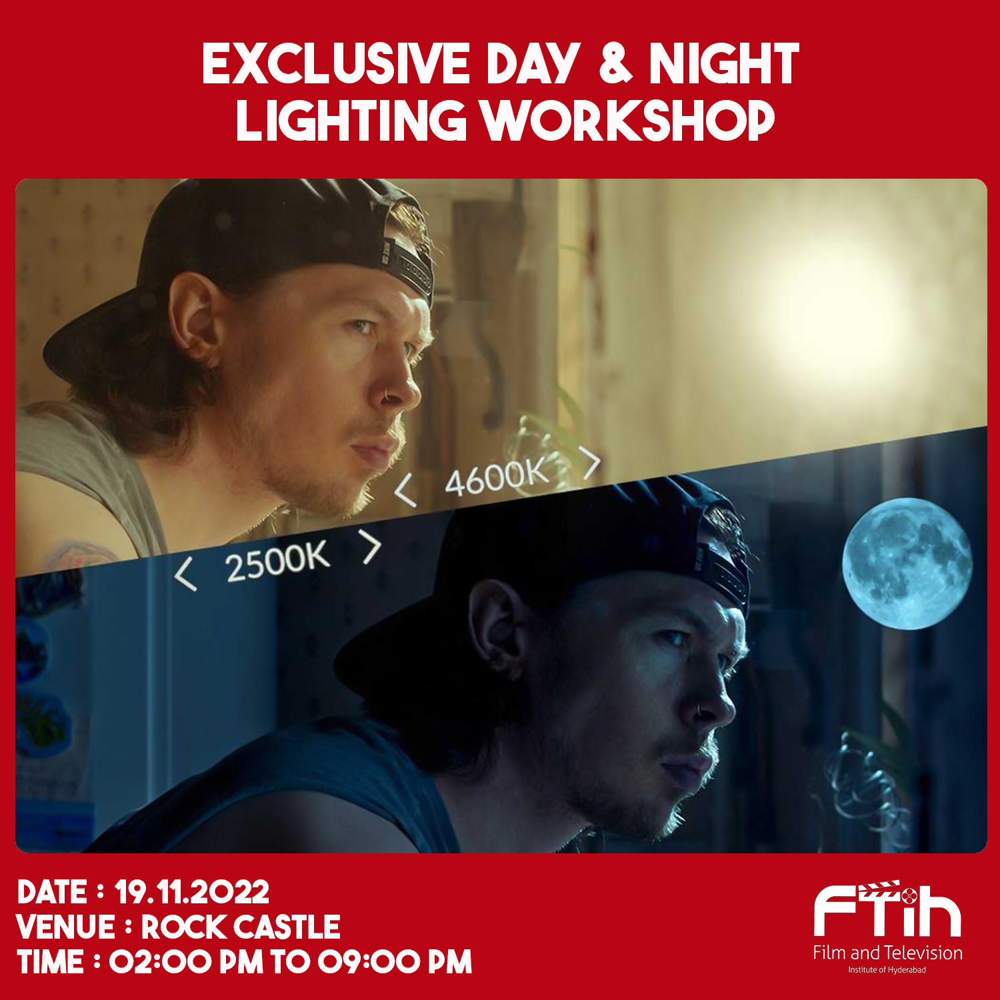

Lighting is an #art form that can express mood and emotion so effectively; Come to our upcoming session to hear from our #lighting experts as they share their best light design advice with you. specifically for students of the FTIH Film School #FTIHFilmschool Each frame's soul is light. You will learn the essentials of producing.


Winter has set in, and we had to take the students for a Field Trip
Winter has set in, and we had to take the students for a Field Trip. Not only was it a fun day out, but also educational. Join the FTIH film school as they #explore new places. And whether it is FIELD TRIP ON 24TH & 25TH DEC,2022. "GRAND CANYON" GANDIKOTA.
DAY & NIGHT LIGHTING WORKSHOP
Light is the soul of every frame. Our DAY & NIGHT LIGHTING WORKSHOP teaches you the fundamentals of creating impactful lighting for your films! Contact us to learn more! Lighting is not just a technical thing; it’s an art that can express mood and emotion so powerfully.
